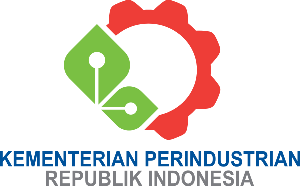

Sejak terbentuknya Kabinet Republik Indonesia I dengan sistem presidensiil tanggal 19 Agustus 1945, maka wewenang dan tanggung jawab sektor industri dan perdagangan berada di bawah Kementerian Kemakmuran yang dipimpin oleh Ir. Soerachman Tjokroadisoerjo hingga berakhirnya tugas kabinet ini tanggal 14 November 1945. Dalam Kabinet Sjahrir I, dengan sistem pemerintahan parlementer, Kementerian Kemakmuran dipimpin oleh Ir. Darmawan Mangoenkoesoemo, yang selanjutnya menjabat Menteri Perdagangan dan Perindustrian pada Kabinet Sjahrir II dari tanggal 12 Maret 1946 sampai dengan 2 Oktober 1946. Selanjutnya, dalam Kabinet Sjahrir III, wewenang dan pembinaan sektor industri dan perdagangan kembali pada Kementerian Kemakmuran yang dipimpin oleh Dr. A.K. Gani, dibantu Menteri Muda Kemakmuran, Mr. Joesoef Wibisono. Dalam serah terima dari Kebinet Sjahrir III kepada Kabinet Amir Sjarifoedin I tanggal 3 Juli 1947, pembinaan sektor industri dan perdagangan masih tetap di bawah Kementerian Kemakmuran yang dipimpin oleh Dr. A.K.Gani dibantu oleh dua orang Menteri Muda yaitu I.J. Kasimo dan Dr. A. Tjokronegoro sampai berakhirnya Kabinet Sjarifoedin II pada tanggal 29 Januari 1948.
Pada Kabinet Hatta I yang ditandai adanya perubahan dari sistem parlementer menjadi presidensiil, Kementerian Kemakmuran dipimpin oleh Sjafroeddin Prawiranegara dan berakhir tanggal 4 Agustus 1949. Usai masa kabinet itu (tanggal 19 Desember 1948 sampai dengan 13 Juli 1949), sektor industri dan perdagangan dipercayakan kepada Ir. Indratjaja.
Dalam Kabinet Hatta II tanggal 4 Agustus sampai dengan 20 Desember 1949, Ir. Indratjaja digantikan oleh I.J. Kasimo sampai berakhirnya Kabinet RIS dengan sistem parlementer, yaitu sejak tanggal 20 Desember 1949 sampai tanggal 21 Januari 1950, yang merupakan kabinet peralihan RI Yogyakarta. Selanjutnya dalam Kabinet Halim (RI Yogyakarta) dari tanggal 21 Januari sampai dengan 6 September 1950, sektor industri dan perdagangan menjadi satu dalam Kementerian Perdagangan dan Perindustrian yang dipimpin oleh Mr. Tandiono Manoe.
Kembali pada Kabinet Hatta dengan sistem parlementer, dari tanggal 20 Desember 1949 sampai dengan tanggal 6 September 1950, sektor industri dan perdagangan masuk dalam wewenang dan tanggung jawab Kementerian Kemakmuran yang dipimpin oleh Ir. Djoeanda.
Pada masa Kabinet Natsir dari tanggal 6 September 1950 sampai dengan 27 April 1951, Kementerian Perdagangan dan Perindustrian dipercayakan kepada Dr. Soemitro Djojohadikoesoemo. Karena adanya perubahan dalam Kabinet tersebut maka Menteri Perdagangan dan Perindustrian diserahkan kepada Mr. Soejono Hadinoto.
Pada masa Kabinet Wilopo, sejak tanggal 3 April 1952, sektor industri dan perdagangan menjadi tanggung jawab Kementerian Perekonomian yang dipimpin oleh Mr. Soemanang. Kemudian Mr. Soemanang digantikan oleh Mr. Iskaq Tjokrohadisoerjo sampai tanggal 12 Agustus 1955. Masa Kementerian Perekonomian berlangsung selama 5 tahun, yaitu sampai Kabinet Ali Sastroamidjojo II yang berakhir pada tanggal 9 April 1957.
Dalam Kabinet Boerhanuddin Harahap yang berakhir pada tanggal 24 Maret 1956, Menteri Perekonomian dijabat oleh I.J. Kasimo. Sementraa dalam Kabinet Ali-Roem-Idham, Menteri Perekonomian dijabat oleh Mr. Boerhanuddin yang dibantu Menteri Muda Perekonomian, F.F. Oembas.
Ketika terbentuk Kabinet Karya yang dipimpin oleh Ir. Djoeanda, sektor industri dan perdagangan dipisahkan pada kementerian tersendiri; yaitu sektor perdagangan masuk dalam Kementerian Perdagangan yang dipimpin oleh Prof. Soemardjo, sebagai Menteri Perdagangan dijabat oleh Drs. Rachmat Muljomiseno, sektor industri dibina oleh Menteri Perindustrian yang dijabat oleh Ir. F.J. Inkiriwang, berakhir pada tanggal 22 Juli 1959.
Dalam Kabinet Kerja dengan sistem presidensiil sampai tanggal 18 Februari 1960, Menteri Muda Perindustrian Rakyat dijabat oleh Dr. Soeharto dan Menteri Muda Perindustrian Dasar dan Pembangunan dijabat oleh Chairoel Saleh sementara Menteri Muda Perdagangan dijabat oleh Mr. Arifin Harahap. Dalam periode itu Chairoel Saleh juga ditunjuk sebagai Menteri Pembangunan dan Dr. J. Leimena sebagai Menteri Distribusi.
Ketika diberlakukannya program Pembangunan Nasional Semesta Berencana yang dimulai tahun 1961, pembinaan industri ditangani oleh dua departemen, yaitu Departemen Perindustrian Dasar dan Pertambangan (Deperdatam) dan Departemen Perindustrian Rakyat (Depperindra). Meskipun antara tahun 1961 sampai dengan Agustus 1964 telah terjadi pergantian kabinet sebanyak 2 (dua) kali, namun Deperdatam dan Depperindra tidak mengalami perubahan. Perubahan organisasi baru terjadi pada periode konfrontasi dengan Negara Federasi Malaysia.
Dalam Kabinet Kerja II, Chairoel Saleh ditetapkan sebagai Menteri Perindustrian Dasar dan Pertambangan, sedangkan Dr. Soeharto dan Mr. Arifin Harahap masing-masing sebagai Menteri Perindustrian Rakyat dan Menteri Perdagangan sampai perubahan kabinet tanggal 6 Maret 1962. Dalam Kabinet Kerja IV yang berakhir pada tanggal 27 Agustus 1964, Menteri Perindustrian dan Pertambangan masing-masing dipegang oleh Chairoel Saleh, Mayjend Dr. Aziz Saleh selaku Menteri Perindustrian Rakyat, sementara Menteri Perdagangan digantikan oleh Adam Malik.
Kabinet Dwikora
Dalam Kabinet Dwikora yang dipimpin oleh Perdana Menteri, dibantu oleh sebuah Presidium, terdiri dari tiga Wakil Perdana Menteri (Waperdam). Kabinet yang tersusun atas lima belas Kompartemen tersebut masing-masing membawahi beberapa Kementerian. Pada saat itu, Kementerian Departemen Perindustrian Dasar dan Pertambangan (Deperdatam) dipecah menjadi tiga Kementerian yang berada di bawah naungan Kompartemen Pembangunan, terdiri dari Kementerian Perindustrian Dasar, Kementerian Pertambangan dan Kementerian Minyak dan Gas Bumi. Departemen Perindustrian Rakyat (Depperindra) dipecah menjadi empat Kementerian yang berada di bawah Kompartemen Perindustrian Rakyat terdiri dari Kementerian Perindustrian Tekstil, Perindustrian Ringan, Perindustrian Kerajinan dan Perindustrian Rakyat serta Urusan Berdikari. Sementara, Departemen Perdagangan dan Departemen Koperasi berada di bawah naungan Kementerian Perdagangan.
Pada masa Kabinet Dwikora periode 27 Agustus 1964 sampai dengan 22 Februari 1966, jabatan Menteri Perindustrian Dasar dipercayakan pada Hadi Thayeb, Menteri Perindustrian Pertambangan dijabat oleh Armunanto, Menteri Perindustrian Tekstil dipimpin oleh Brigjen Ashari Danoedirdjo, Menteri Perindustrian Ringan dipimpin oleh Brigjen M. Yoesoef, Menteri Perindustrian Kerajinan dipimpin oleh Mayjen Dr. Aziz Saleh, Menteri Perdagangan Dalam Negeri oleh Brigjen Achmad Joesoef dan Menteri Perindustrian Maritim dijabat oelh Mardanoes. Sewaktu Kabinet Dwikora disempuranakan, maka sebagai Menteri Perindustrian Dasar ditetapkan Brigjen M. Joesoef, Menteri Perindustrian Rakyat ditetapkan Mayjen Dr. Aziz Saleh, Menteri Perindustrian Tekstil Brigjen Ashari Danoedirdjo, Menteri Perindustrian Kerajinan Hadi Thajeb, Menteri Perindustrian Ringan Laksda (U) Soeharnoko Harbani dan Menteri Perdagangan tetap dipegang oleh Brigjen Achmad Joesoef. Menteri Perindustrian Maritim masih dijabat oleh Mardanus sampai kabinet ini berakhir tanggal 28 Maret 1966.
Selanjutnya, berlangsung Kabinet Dwikora dan Brigjen M. Joesoef ditetapkan sebagai Menteri Perindustrian Dasar dan Ringan, Ir. Sjafiun sebagai Menteri Perindustrian Tekstil, brigjen Ashari Danudirdjo diangkat sebagai Menteri Perdagangan, Kom (U) J. Salatoen sebagai Menteri Perindustrian Penerbangan dan Mardanus tetap sebagai Menteri Perindustrian Maritim sampai berakhirnya Kabinet Dwikora tanggal 25 Juli 1966.
Di era Orde Baru dengan terbentuknya Kabinet Ampera sampai 17 Oktober 1967 Mayjen M. Joesoef ditetapkan sebagai Menteri Perindustrian Dasar, Ringan dan Tenaga, Menteri Perindustrian Tekstil dan Kerajinan Rakyat, Ir. H. M. Sanusi dan Menteri Perdagangan dijabat oleh Mayjen Ashari Danoedirdjo, Ir. H. M. Sanusi tetap sebagai Menteri Perindustrian Tekstil dan Kerajinan Rakyat dan Mayjen M. Joesoef sebagai Menteri Perdagangan, yang berakhir pada tanggal 6 Juni 1968.
Kabinet Pembangunan
Dalam Kabinet Pembangunan I dengan sistem presidensiil yang terbentuk sejak tanggal 6 Juni 1968 sampai dengan 28 Maret 1973, Letjen M. Joesoef sebagai Menteri Perindustrian sampai berakhirnya Kabinet Pembangunan II dan Prof. Dr. Soemitro Djojohadikoesoemo sebagai Menteri Perdagangan, kemudian digantikan oleh Drs. Radioes Prawiro.
Dalam Kabinet Pembangunan III, tanggal 29 Maret 1978 sampai dengan 19 Maret 1983, Ir. A.R. Soehoed sebagai Menteri Perindustrian, Drs. Radioes Prawiro sebagai dan Menteri Perdagangan dan Koperasi, Bustanil Arifin SH ditunjuk sebagai Menteri Muda Urusan Koperasi. Selanjutnya sejak tanggal 29 Maret 1983 sampai dengan 19 Maret 1988, Rachmat Saleh, SE ditunjuk sebagai Menteri Perdagangan, sementara Bustanil Arifin, SH sebagai Menteri Koperasi.
Dalam Kabinet Pembangunan IV, sebagai Menteri Perindustrian adalah Ir. Hartarto sampai berakhirnya Kabinet Pembangunan V tanggal 19 Maret 1993. Menteri Muda Perindustrian dijabat oleh Ir. T. Ariwibowo, Menteri Perdagangan dijabat oleh Dr. Arifin Siregar dan sebagai Menteri Muda Perdagangan dijabat oleh Dr. Soedradjat Djiwandono.
Dalam Kabinet Pembangunan VI sejak tanggal 19 Maret 1993 sampai dengan 19 Maret 1998, Ir. T. Ariwibowo ditetapkan sebagai Menteri Perindustrian dan sebagai Menteri Perdagangan ditunjuk Prof. Dr. Satrio Budihardjo Joedono yang berakhir sampai tanggal 6 Desember 1995, sebagai awal digabungnya Departemen Perindustrian dan Departemen Perdagangan. Sebagai Menteri Perindustrian dan Perdagangan diangkatlah Ir. T. Ariwibowo.
Pada tangal 16 Maret 1998, menggantikan Ir. T. Ariwibowo diangkat Mohammad Hasan sebagai Menteri Perindustrian dan Perdagangan. Dua bulan berselang dengan terjadinya gerakan reformasi, maka Kabinet Pembangunan VI mengalami perubahan. Pada tanggal 21 Mei 1998, Mohammad Hasan digantikan oleh Prof. Dr. Ir. Rahardi Ramelan, M.Sc.
Selanjutnya dalam Kabinet Reformasi Pembangunan di bawah kepemimpinan Presiden Abdurrahman Wahid, tanggal 26 Oktober 1999 ditetapkan Drs. Jusuf Kalla menggantikan Prof. Dr. Ir. Rahardi Ramelan, M.Sc. Enam bulan kemudian, tepatnya tanggal 26 April 2000, pergantian pimpinan Depperindag kembali terjadi yakni dari Drs. Jusuf Kalla diserahkan kepada Letjen TNI Luhut B. Pandjaitan.
Kabinet Gotong Royong
Pada tanggal 9 Agustus 2001, dalam Kabinet Gotong Royong di bawah kepemimpinan Megawati Soekarnoputri, maka pimpinan Depperindag diserahterimakan dari Letjen TNI Luhut B. Pandjaitan kepada Rini M.S. Soewandi.
Selama kepemimpinan Presiden Abdurrahman Wahid, selaku Presiden Republik Indonesia ke-4, dengan berbagai alasan dan masalah yang dihadapi telah berkali-kali merubah susunan dan komposisi personalia kabinet yang dipimpinnya. Dalam hubungan ini telah terjadi sebanyak tiga kali pergantian Menteri Koordinator Perekonomian Nasional, semula dijabat oleh Dr. Kwik Kian Gie; kemudian berturut-turut dipegang oleh Dr. Rizal Ramli dan Drs, Burhanuddin Abdullah MA hingga berakhirnya pemerintahan Presiden Abdurrahman Wahid. Sedangkan Menteri yang menjabat bidang perindustrian dan perdagangan ditetapkan semula Drs. Jusuf Kalla, kemudian diganti oleh Letjen TNI Luhut B. Pandjaitan seperti yang telah diungkapkan di atas.
Presiden Abdurrahman Wahid kemudian diberhentikan oleh MPR - RI melalui suatu Sidang Istimewa (SI) pada tanggal 23 Juli 2001. Selanjutnya, sesuai konstitusi, Wakil Presiden RI Megawati Soekarnoputri ditetapkan sebagai Presiden RI ke-5 yang menjabat hingga tahun 2004. Sedang sebagai Wakil Presiden RI untuk periode yang sama terpilih Dr. Hamzah Haz.
Harapan besar bangsa Indonesia yang diletakkan di pundak Megawati Soekarnoputri dan Hamzah Haz memang beralasan. Betapa tugas-tugas berat tersebut harus diemban, tidak saja melingkupi bidang perekonomian, penegakan hukum, pemulihan keamanan serta persoalan-persoalan lain yang demikian kompleks menjadi dambaan seluruh rakyat Indonesia untuk segera berakhir. Bangsa Indonesia demikian menyadari bahwa globalisasi semakin dekat, sementara jika persoalan di dalam negeri masih belum terselesaikan secara baik, sangat mustahil akan mampu bersaing di kancah internasional.
Bercermin dati pengalaman dua tahun kepemimpinan Presiden Abdurrachman Wahid, Megawati Soekarnoputri sebagai Presiden RI ke-5 didampingi oleh Hamzah Haz sebagai Wakil Presiden RI yang ke-9, membentuk Kabinet Gotong Royong yang didukung dari berbagai unsur, baik dari partai politik maupun kalangan profesional dan non politik. Dengan terbentuknya Kabinet Gotong Royong di bawah pimpinan puteri sulung Proklamator RI, Ir. Soekarno, yang diumumkan pada tanggal 9 Agustus 2001, bangsa Indonesia kembali menapak dan berusaha melangkah dengan tegak menyongsong hari depan yang cerah, agar bisa sejajar dengan bangsa-bangsa lain di dunia ini. Penanganan sektor industri dan perdagangan yang dipercayakan kepada Rini Mariani Soemarno Soewandi diharapkan mampu menghidupkan kembali perekonomian bangsa Indonesia.
Kabinet Indonesia Bersatu
Departemen Perindustrian dan Perdagangan di bawah kepemimpinan Rini M.S. Soewandi berakhir pada tahun 2004 seiring dengan pergantian Presiden RI, yaitu dengan terpilihnya Dr. Soesilo Bambang Yudhoyono sebagai Presiden RI melalui pemilihan langsung yang pertama di Indonesia. Pada Susunan Kabinet Indonesia Bersatu Jilid I (Periode 2004 - 2009) di bawah kepemimpinan Presiden RI Soesilo Bambang Yudhoyono dan Wakil Presiden RI Drs. Jusuf Kalla, Departemen Perindustrian dan Perdagangan dipecah menjadi dua yaitu Departemen Perindustrian yang dipimpin oleh Dr. Ir. Andung A. Nitimihardja (20 Oktober 2004 - 5 Desember 2005) sebagai Menteri Perindustrian dan Departemen Perdagangan yang dipimpin oleh Mari Elka Pangestu. Pada tanggal 5 Desember 2005 terjadi perombakan Kabinet Indonesia Bersatu Jilid I dimana Dr. Ir. Andung A. Nitimihardja diganti oleh Drs. Fahmi Idris (2005 - 2009) sebagai Menteri Perindustrian.
Kemudian pada susunan Kabinet Indonesia Bersatu Jilid II (periode 2009 - sekarang) di bawah kepemimpinan Presiden RI Soesilo Bambang Yudhoyono dan Wakil Presiden RI Boediono, Departemen Perindustrian diubah menjadi Kementerian Perindustrian dengan Mohamad S. Hidayat sebagai Menteri Perindustrian.
Kabinet Kerja
Presiden Joko Widodo secara resmi telah membentuk Kabinet Kerja tanggal 26 Oktober 2014, dan Saleh Husin ditunjuk sebagai Menteri Perindustrian menggantikan Mohamad S Hidayat yang telah berakhir masa tugasnya.
Kementerian Perindustrian menyelenggarakan acara Pisah Sambut sekaligus Serah Terima Jabatan Menteri Perindustrian dari Mohamad S Hidayat kepada penggantinya Saleh Husin di Ruang Garuda, Kementerian Perindustrian, Jakarta, 28 Oktober 2014. Acara tersebut disaksikan oleh pejabat eselon I dan II di lingkungan Kementerian Perindustrian serta dihadiri oleh para pelaku usaha dan wartawan dari berbagai media nasional. Saleh Husin akan menjalankan tugas barunya sebagai Menteri Perindustrian di Kabinet Kerja periode 2014-2019.
Menteri Perindustrian Saleh Husin akan terus mendorong pengembangan industri nasional mengingat sektor tersebut merupakan tulang punggung perekonomian Indonesia, dimana sektor industri masih memberikan kotribusi yang cukup signifikan terhadap ekonomi dengan mencapai lebih dari 23% atau menjadi sektor terbesar penyumbang ekonomi nasional.
Kebijakan pengembangan industri di Kabinet Kerja merupakan terjemahan visi dan misi Presiden RI dengan mewujudkan dan menjabarkan program Trisakti, yaitu berdaulat secara politik, berdikari secara ekonomi, dan berkepribadian secara sosial budaya.
Dalam bidang ekonomi, program Trisakti tersebut ditujukan untuk mewujudkan pertumbuhan ekonomi, pembangunan sosial dan pembangunan ekonomi yang berkelanjutan sekaligus mewujudkan perekonomian yang inklusif berbasis ilmu pengetahuan teknologi dan keunggulan sumber daya manusia.
Sementara itu, penjabaran program dalam Nawa Cita yang terkait sektor industri adalah meningkatkan produktivitas rakyat dan daya saing di pasar internasional serta mewujudkan kemandirian ekonomi dengan menggerakkan sektor-sektor strategis ekonomi domestik.
Di samping program-program tersebut, sesuai dengan sidang pertama Kabinet Kerja, Menteri Perindustrian ditugaskan segera melaksanakan Quick Wins, yaitu: (1) Re-disain Road Map Industrialisasi sejalan dengan Trisakti dan NawaCita; (2) Hilirisasi hasil tambang keproduk jasa dan industri; (3) Hilirisasi produk-produk pertanian menjadi produk agro industri; (4) Pembangunan 10 kawasan industri di luar pulau Jawa, melalui kerjasama Pemerintah dan swasta; (5) Expo dan pemberian penghargaan terhadap inovasi produk-produk industri; (6) Kampanye sistematis dan kreatif untuk menumbuhkan apresiasi terhadap kegiatan industri dalam mendukung Peningkatan Penggunaan Produksi Dalam Negeri (P3DN); (6) Penguatan struktur industri melalui keterkaitan antara industri hulu (dasar) dan industri hilir (light).